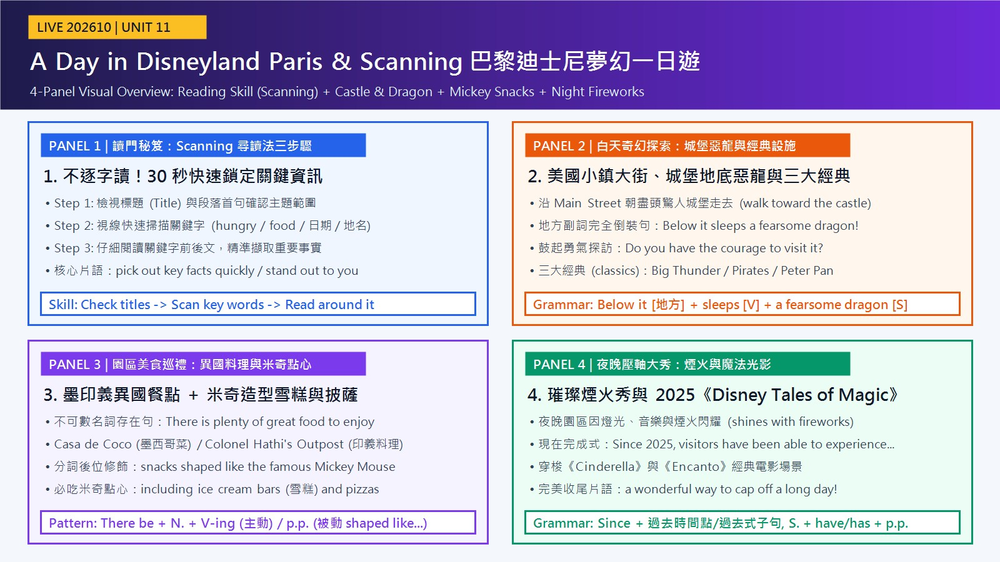

遊客入園後沿著美國小鎮大街朝向驚人城堡前行，而城堡地底沉睡著令人生畏的惡龍，考驗探訪者的勇氣。
walk toward / below it sleeps巨雷山、加勒比海盜與小飛俠皆為歷久不衰的經典設施；各區擁有獨特主題，讓遊客單日暢遊多重世界。
classics / its own theme園區供應充足的墨西哥、印度與義大利美食，更有大量被做成米奇形狀的雪糕與披薩點心。
snacks shaped like Mickey自 2025 年以來，遊客得以欣賞結合燈光、音樂與煙火的《Disney Tales of Magic》，為一日遊畫下完美句點。
Since 2025 / cap offDisneyland Paris (S) stands out (V)；as a magical destination 表身分；featuring... 分詞片語補充特色。
stands out：陳述樂園長久不變的地位。
as 是介系詞「作為」；featuring 是現在分詞片語，等於 which features，修飾 destination。
stand out（脫穎而出）是不及物片語動詞，不接受詞；feature 當動詞＝以……為特色；beloved「深受喜愛的」。
Disneyland Paris（主詞）stands out（動詞片語）as a magical destination（介系詞片語（身分））featuring thrilling rides, live shows, and beloved characters（現在分詞片語（補充特色））語塊 1 ➔ 語塊 3（身分超車） ➔ 語塊 2 ➔ 逗號 ➔ 語塊 4（長修飾語順翻補述）
主詞 Disneyland Paris 先翻「巴黎迪士尼樂園」，接著是 stands out as a magical destination。
stands out as a magical destination 的 as 是介系詞，說明以什麼身分脫穎而出；featuring thrilling rides, ... 是 which features ... 省略關代後改成的現在分詞片語，修飾 destination，說明它有哪些特色。
with... → featuring...（以……為特色）with rides, shows... 在報導文體中常升級為現在分詞 featuring...。stand out（顯眼、脫穎而出）正是尋讀法 Practice Time 練習中出現的核心片語。travelers (S) stroll (V)；句首 Upon entering the gates 是介系詞片語；along / toward 是地方副詞。
stroll：報導文體描述遊客一般的動線。
Upon + V-ing ＝ As soon as + S + V（一……就……），省略了與主句相同的主詞。
at the end 提到城堡前。
upon / on 是介系詞，後接 V-ing（不寫 ❌ upon enter）；stroll 是悠閒地走，比 walk 生動。
Upon entering the gates,（介系詞＋動名詞）travelers stroll（主幹）along Main Street（地方副詞（路徑））toward the incredible castle at the end（地方副詞（方向））語塊 1 ➔ 語塊 2 的「旅客便」 ➔ 語塊 3 ➔ 語塊 4（at the end 先翻） ➔ 語塊 2 的「漫步而去」壓軸
主句 travelers stroll 後面跟著兩個地方片語：along Main Street 和 toward the incredible castle at the end。
Upon entering the gates 等於 As soon as travelers enter the gates：主詞與主句相同，省略連接詞與主詞後，介系詞 upon 後面的動詞改成 V-ing。這是報導文體常見的精簡寫法。
Upon / On + V-ing（一……就……）When you enter 升級為 Upon entering the gates，是學測作文最受青睞的精簡結構。stroll（悠閒漫步）比一般 walk 更能表現逛主題樂園的愜意感。visitors (S) must look out (V)；後半倒裝 a fearsome dragon (S) sleeps (V)；waiting for... 分詞片語修飾 dragon。
must 表必要；sleeps 現在簡單式描述固定設定；waiting 表與 sleeps 同時進行的狀態。
Yet 表轉折；地方副詞 below it 句首、名詞主詞倒裝；who 引導形容詞子句修飾 those。
those who possess ... 的 who 子句要搬到「人」前：「擁有勇氣靠近其洞穴的人」。
those who + 複數動詞（凡是……的人）；possess the courage to V ＝ have the courage to V；its cave 不寫 it’s。
Yet visitors must look out（主句（轉折））—below it sleeps a fearsome dragon（地方副詞倒裝）, waiting for（現在分詞片語）those who possess the courage to approach its cave（代名詞＋關代子句）語塊 1 ➔ 語塊 2（倒裝照序） ➔ 語塊 3 ➔ 語塊 4（who 子句超車到「人」前）
前半 Yet visitors must look out，翻「然而遊客必須當心」，破折號後面是要當心的內容。
逗號後的 waiting for 順著翻「等待著」，接著是 those who possess the courage to approach its cave。
below it sleeps a fearsome dragon 是地方副詞句首的完全倒裝，主詞 a fearsome dragon 落在動詞後。waiting for ... 補充惡龍的狀態。those who possess the courage：those 是「那些人」，who 右邊缺主詞，是主格關代；those who ＝ people who。
below it sleeps a fearsome dragon 與 those who possess the courage to V（凡是擁有勇氣做……的人）。have the courage → possess the courage（擁有勇氣）。popular attractions (S) include (V) timeless classics (O)；Across the resort 是地方副詞；such as 舉例。
include：陳述現有設施。
such as 帶出三個舉例，修飾 classics。
across the resort（整個度假區各處）；such as 後接名詞，不接句子；timeless（不朽的）。
Across the resort,（地方副詞）popular attractions include（主幹）timeless classics（受詞）such as Big Thunder Mountain, Pirates of the Caribbean, and Peter Pan’s Flight（舉例片語）語塊 1 ➔ 語塊 2 ➔ 語塊 4（舉例超車） ➔ 語塊 3 壓軸
句首 Across the resort 先翻「在整個園區中」，across 是遍及各處。
主幹 popular attractions include timeless classics，翻「熱門景點包括……不朽經典」，經典先留在最後。
popular attractions include timeless classics 後面用 such as 舉出三個設施名稱，修飾 classics。such as 只能接名詞；要接完整句時改用 For example, S + V。
timeless classics（不朽經典）timeless（不受時間影響的）立刻加分。classics like ... 改成 timeless classics such as ...，舉例用 such as 更正式。guests (S) can explore (V) multiple exciting worlds (O)；Because 子句說明原因。
features 描述園區規劃；can 表可能性。
Because 引導原因副詞子句，放句首要加逗號；within a single day 是時間片語。
within a single day 提到動詞前：「在單日內探索」。
feature 在此是動詞「具備」；its own distinct 中文合成「獨特」即可。
Because each zone features its own distinct theme,（原因副詞子句）guests can explore（主句）multiple exciting worlds（受詞）within a single day（時間片語）語塊 1 ➔ 語塊 2 的「賓客能」 ➔ 語塊 4（時間超車） ➔「探索」 ➔ 語塊 3
主句 guests can explore multiple exciting worlds within a single day，主詞翻「賓客」。
Because each zone features its own distinct theme 有主詞 zone、動詞 features，是原因副詞子句，放句首時後面加逗號，再接主句 guests can explore ...。features 在這裡是動詞（具備），不是名詞「特色」。
has its own theme → features its own distinct theme（具備其獨特主題）；原課文的 so 結果句改寫成 Because 原因句。in one day → within a single day（在單日內），強調一天之內就能完成。there is (V) plenty of great food (S)；available 後位修飾 food；throughout the park 是地方副詞。
there is：描述園區現況。
For hungry travelers 表對象；形容詞 available 放在名詞後修飾。
throughout the park 提到「有」前：「園區各處都有」；available 放句尾補述「可供享用」。
plenty of + 不可數 food 配 is；food available ＝ food that is available；throughout ＝ 遍及。
For hungry travelers,（介系詞片語（對象））there is plenty of great food（存在句）available（形容詞（後位修飾））throughout the park（地方副詞）語塊 1 ➔ 語塊 4（地點超車） ➔ 語塊 2 ➔ 語塊 3 句尾補述
For hungry travelers 先翻「對於飢餓的旅客而言」，For 是對象，不是「為了」。
plenty of great food，food 不可數，所以用 is。available 放在名詞後面，是 food that is available 省略 that is 的結果；-able / -ible 結尾的形容詞常這樣後位修飾。
food 不可數，存在句用 there is；plenty of 可接不可數與複數名詞。food available（可獲得的／供應中的食物）＝ food to enjoy，報導文體更精簡。Guests (S) can dine (V)；at Casa de Coco ... or (at) Colonel Hathi’s Outpost 是兩個地點。
can 表可能，提供建議。
or 連接兩組「地點＋for 目的」；第二組省略了重複的 at。
dine at（在……用餐）；cuisine（料理、菜系）比 food 正式；or 後省略 at，中文要補「在」。
Guests can dine（主幹）at Casa de Coco（地點）for Mexican dishes（目的片語）or Colonel Hathi’s Outpost（第二個地點）for Indian and Italian cuisine（目的片語）語塊 1 的「賓客可以」 ➔ 語塊 2（地點超車） ➔ 語塊 3（dine＋for 合成「品嚐」） ➔ 語塊 4（補「在」） ➔ 語塊 5
主詞 Guests 翻「賓客」，動詞 can dine 先別急著翻成「用餐」。
or 後面的 Colonel Hathi’s Outpost 省略了 at，同樣補「在」：「或在……享用印度與義大利料理」。
dine at Casa de Coco for ... or (at) Colonel Hathi’s Outpost for ...。or 前後兩組平行，第二組省略了重複的 at。中文的地點要放到動詞前，所以兩組都寫成「在……品嚐／享用……」。
Visit ... for ... 改成報導文體的 Guests can dine at ... for ...，主詞明確、語氣客觀。food → cuisine（某地區的料理、菜系），寫異國美食時更道地。there are (V) numerous snacks (S)；shaped like 修飾 snacks；including 舉例。
there are：描述現有商品。
Furthermore 是轉承副詞（遞進）；過去分詞片語 shaped like ＝ which are shaped like。
shaped like Mickey Mouse 提到「點心」前：「做成米奇形狀的點心」；including 舉例放句尾順翻。
numerous + 複數名詞（＝ many）；點心是被做成某形狀，用過去分詞 shaped；Furthermore 後加逗號。
Furthermore,（轉承副詞（遞進））there are numerous snacks（存在句）shaped like Mickey Mouse（過去分詞片語（後位修飾））, including ice cream bars and pizzas（舉例片語）語塊 1 ➔ 語塊 2 的「還有許多」 ➔ 語塊 3（分詞片語超車） ➔「點心」 ➔ 語塊 4
Furthermore 翻「此外」，接著 there are numerous snacks，先說「還有許多……」，點心先留著。
snacks shaped like Mickey Mouse 是 snacks which are shaped like Mickey Mouse 省略 which are 的結果；點心是被做成米奇形狀，用過去分詞。snacks 是複數，存在句用 are。
food 不可數用 there is；本句 snacks 複數用 there are，並接過去分詞 shaped like...。Of course, 改成 Furthermore,，lots of 改成 numerous，報導語氣更正式。the sky (S) glows (V)；with... 表原因。
glows：描述每晚的固定景象。
with 片語說明發光的原因。
after dark 是固定片語，dark 不加 the；glow with（因……而發光）。
After dark,（時間副詞）the sky glows（主幹）with music, lights, and fireworks（介系詞片語（原因））語塊 1 ➔ 語塊 2 的「夜空」 ➔ 語塊 3（原因超車） ➔「閃耀」壓軸
After dark 是固定說法，翻「天黑之後」；主詞 the sky 在晚上翻「夜空」。
with music, lights, and fireworks 說明夜空閃耀的原因。原課文用 shines with，這裡換成同義的 glows with。
after dark（天黑後）中 dark 是名詞，不加 the；同義說法有 at night、when night falls。shines with fireworks → glows with fireworks（因煙火而發光）。visitors (S) have been able to witness (V) Disney Tales of Magic (O)；an impressive spectacle 是同位語；presenting... 分詞片語；to cap off 不定詞。
Since 2025 配現在完成式 have been able to：從 2025 年至今都能目睹；分詞 presenting 描述節目內容。
presenting 修飾 spectacle，to cap off 表結果。
from Cinderella and Encanto 提到「場景」前；at one of ... 提到「旅程」前。
witness（親眼目睹）；同位語前加逗號；one of the + 最高級／premier + 複數名詞；cap off 圓滿收尾。
Since 2025, visitors have been able to witness（主幹）Disney Tales of Magic（受詞）, an impressive spectacle（同位語）presenting scenes from Cinderella and Encanto（現在分詞片語）to cap off a memorable trip（不定詞（結果））at one of the world’s premier theme parks（介系詞片語（地點））語塊 1 ➔ 語塊 2 ➔ 語塊 3（同位語另起一句） ➔ 語塊 4（來源超車到場景前） ➔ 語塊 5 的「為」 ➔ 語塊 6（地點超車到旅程前） ➔「難忘旅程畫下圓滿句點」
這句很長，但只有一組主詞動詞：visitors have been able to witness，後面全是片語。
Disney Tales of Magic 後面用逗號接同位語 an impressive spectacle，說明它是什麼；presenting scenes from ... 是 which presents 的分詞簡化，修飾 spectacle；最後 to cap off a memorable trip ... 說明這場秀帶來的結果。
Since 2025, S + have been able to Vhave been able to；同時複習 cap off（圓滿收尾）。experience → witness（親眼目睹）；best → premier（頂尖的），報導文體更正式。本課核心單字（courage, classic, particular, incredible, theme, bar, firework, transport...）與關鍵句型（地方副詞完全倒裝, Since 現在完成式, there be 存在句分詞修飾, cap off, spend time V-ing），在近 10 年學測中大量出現！已為您備好 15 題完整題組（5 詞彙真題 + 3 克漏字真題 + 3 中譯英手寫真題 + 4 名師魔改題），點選立即於新分頁展開特訓！